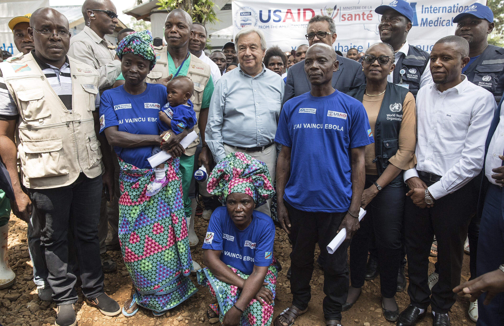

Ebola DRC 2026: Security Risk Matrix
Bundibugyo strain, no vaccine, no treatment. A Public Health Emergency of International Concern was declared on 17 May 2026.

Context Overview: Eastern DRC
The 2026 Ebola outbreak (Bundibugyo strain, no approved vaccine, no specific treatment) has erupted in eastern DRC's Ituri Province, a region under effective rebel and armed group control where the Kinshasa government holds no operational presence. State absence dismantles every layer of containment: surveillance, contact tracing, isolation, and community trust cannot function without recognized authority. Armed groups restrict response teams while exploiting displacement and fear to expand territorial control, as criminal networks traffic PPE and manipulate quarantine lists. Border closures with Uganda, South Sudan, Rwanda, and Burundi, while medically necessary, compress already-fragile livelihoods into acute crisis, triggering displacement that paradoxically accelerates viral spread. NGOs, critically weakened by USAID dismantlement and cascading global funding cuts, face both financial paralysis and physical access denial. Eastern DRC confronts this outbreak more fragile and less prepared than the 2018–2020 outbreak that killed over 2,000 people.
5 × 5 Security Risk Matrix
| Probability ↓ / Impact → | Insignificant 1 | Minor 2 | Significant 3 | Major 4 | Severe 5 |
|---|---|---|---|---|---|
| 5 · Almost Certain | R8 · 5 | R6 · 10 | R3 · 15 | R1 · 20 | 25 |
| 4 · Likely | 4 | R7 · 8 | R2 · 12 | R4 · 16 | R5 · 20 |
| 3 · Moderate | 3 | 6 | R9 · 9 | 12 | R10 · 15 |
| 2 · Unlikely | 2 | 4 | 6 | 8 | 10 |
| 1 · Rare | 1 | 2 | 3 | 4 | 5 |
Risk Register: Identified Security Risks
| Code | Risk | Probability × Impact | Level |
|---|---|---|---|
| R1 · 20 | Virus Extension to Non-Affected Regions | Prob 5 (Almost Certain) × Impact 4 (Major) | Extreme |
| R5 · 20 | NGO Response Collapse — USAID Funding Gap | Prob 4 (Likely) × Impact 5 (Severe) | Extreme |
| R4 · 16 | Border Closures Driving Secondary Displacement | Prob 4 (Likely) × Impact 4 (Major) | Very High |
| R3 · 15 | DRC State Absence Enabling Uncontrolled Spread | Prob 5 (Almost Certain) × Impact 3 (Significant) | Very High |
| R2 · 12 | Armed Groups Blocking Humanitarian Response | Prob 4 (Likely) × Impact 3 (Significant) | High |
| R6–R10 · 8–15 | Criminal Exploitation · Health Worker Attacks · Uganda Spread | Prob 4–5 × Impact 2–3 · Monitoring required | Med – High |
Peace and Security Bridges is actively accompanying humanitarian partners in the field, facilitating access negotiations with armed actors, and maintaining urgent calls for emergency financial mobilization from bilateral and multilateral donors, bridging the critical gap where no other coordination mechanism currently exists.